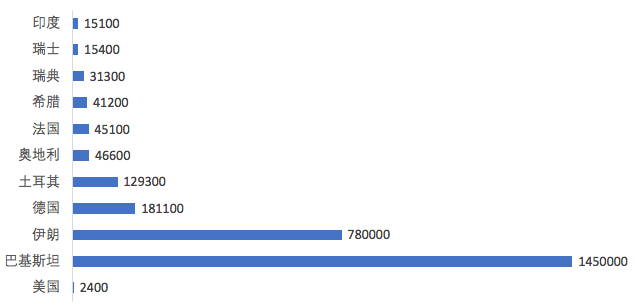

收录于合集
以下文章来源于法意读书 ，作者法意视界PKU
法意读书 .
北大法意读书－－在这里，有好书，有良友，有故事。
导读 ****
欧亚系统科学研究会： 美国撤军阿富汗引发新一波难民潮，成千上万的阿富汗人滞留喀布尔机场，希望有机会逃离阿富汗。然而，至今为止，美国接收阿富汗难民的规模极其有限。美国主要通过签发特别移民签证（Special Immigran Visa）接收阿富汗难民，这是为当地曾为美国政府服务的阿富汗人颁发的特殊签证，受惠面极其有限。截止7月31日，今年仅有494位阿富汗难民成功申请进入美国。 这一事实促使我们重思拜登的难民政策究竟是特朗普时代的延续还是断裂。 特朗普出于“美国优先”与维护边境安全的立场，在四年任期之中竭力遏制难民与寻求庇护者进入美国；而拜登则采取截然相反的态度，其难民政策以融合与包容为主基调，试图建立兼顾人道主义与国家安全的难民与庇护机制。 本文为拜登的辩护是，特朗普时代所留下的严厉遗产难以消除，在新冠疫情与经济危机的双重打击下，拜登治下的难民与庇护制度改革必须以更为渐进的方式进行。 但是，从今年激化的阿富汗局势和美国迟顿的难民政策响应来看，我们应当看到， 构成美国扩大接收难民规模的根本性阻碍，是内外政策权利与义务的脱节，而非党派分野。 本文原文刊登于Foreign Affairs，译稿由法意读书授权转载，文章仅代表作者本人观点。
喀布尔机场的硝烟，图源：Al Jazeera
作品简介 ****
作者： Sarah Pierce; Susan Fratzke
译者： 常佳艺（北京大学国际关系学院，国政学人编译员）
来源： Foreign Affairs；法意读书
正 文
**美国前总统特朗普主持了美国现代历史上最严格的移民和庇护机制，在短短四年内，特朗普政府几乎使庇护制度陷 入瘫痪，并大幅削减了美国接纳的海外难民数量。**2020年，美国给予申请人庇护的比例大约只有巴拉克·奥巴马总统任期结束时的一半；2020年，美国仅安置了不到1.2万名难民：比奥巴马任期的最后一年减少了85%。 总统 拜登 已经开始撤销特朗普的一些限制性政策，并承诺会将撤销进程延续下去。移民和难民权益倡导者、商界领袖和其他人士都对拜登政府寄予厚望，希望拜登政府不仅能废除特朗普在移民问题上的破坏性遗产，还能推进全面改革，实现南部边境的现代化。 但消除过去四年的负面影响并不像签署一系列行政命令那么容易。 特朗普政府几乎废除了美国的庇护和难民安置系统，而重新建立这些系统将是一项艰巨的任务——尤其是在疫情大规模蔓延和随之而来的经济危机的背景下，这场危机让许多美国人对新移民的慷慨程度大大降低。
01
** 庇护的缓慢衰亡**
那些逃离暴力或迫害的人可以通过两种途径在美国寻求庇护。他们可以前往美国领土申请庇护，也可以在联合国登记成为难民并通过联邦项目得到安置，而这一项目自1980年以来，已使310万难民进入美国。 特朗普政府几乎竭尽全力关闭了这两条通道，不仅使得申请庇护面临更多障碍，也大幅减少了每年接纳的难民人数。 特朗普对政治庇护的敌意一定程度上源于他对边境安全的痴迷。在2016年的竞选中，特朗普承诺要封锁南部边境。然而，他就任之后却依然难以控制来自中美洲和墨西哥的难民潮。许多新移民并不是企图逃避侦查的经济移民，而多是独自或与家人一同寻求庇护的儿童，他们积极寻求美国边境巡逻人员的保护。因此，他们无法被强化的安全措施吓倒。一旦入境美国，这些移民就进入到一个存在严重缺陷的庇护体系内。他们往往不得不等待多年，等待积压大量案件的移民法庭审理他们的案件。那些提出有效要求的人被长期搁置于前途未卜的境地之中，而那些提出不太合理要求的人则利用这种拖延作为在美国居留的临时许可。这个系统既缓慢又负担过重，既无法为合法的寻求庇护者提供保护，也无法保障美国边境的安全。但是，特朗普政府并未改革这个系统的缺陷，反而将精力集中于他所认为的寻求庇护者个人的欺诈和滥用行为上，并谴责允许寻求庇护者在等待诉求被审理的期间居留美国并工作的“抓放”政策（Catch and Release Policies）。此外，由于2018年赴美的家庭和儿童数量急剧上升，特朗普政府实施了一系列更为强硬的惩罚性政策，如故意在边境分离家庭的“骨肉分离”政策，以阻止人们寻求庇护。特朗普政府制定了“移民保护议定书”（Migrant Protection Protocols），又称“留在墨西哥”政策（“Remain in Mexico” Policy），要求寻求庇护者在等待申请在美裁决期间留在墨西哥等待结果。它还与萨尔瓦多、危地马拉和洪都拉斯三国达成协议，允许美国将寻求庇护者送往这些国家提交申请，从而剥夺他们申请美国保护的机会。作为对这些限制性措施的补充，美国政府还进行了法律改革，缩小了庇护理由的范围，例如，宣布家庭暴力一般不足以成为有效申请的理由，并使申请程序变得更加繁琐。 到了2019年，特朗普政府环环相扣的政策已经严重阻碍了美国边境地区庇护制度的推行。 因此，2019年5月至9月期间，可信的恐惧申请由10210个降至4782个，下降半数。在同一时期，边境地区的逮捕数量也大幅下降，从13万下降到2万2千例。新冠疫情的蔓延使政府在南部边境的工作变得更加紧张。2020年3月，美国疾病控制和预防中心主任发布命令，允许驱逐所有未获准进入美国的外国公民。数万名潜在的寻求庇护者随后被驱逐回墨西哥或他们逃离的国家，边境的庇护申请从平均每月4600份降至几百份。“留在墨西哥”和其他限制性政策逐渐扼杀了庇护制度，而疾控中心的命令则有效地完成了致命一击。
02
** 拒绝难民**
特朗普政府在削弱了边境庇护体系的同时，也大规模削减了从国外重新安置难民的规模。 美国的重新安置项目规模曾居世界首位，每年接纳全球一半以上的难民重新安置。但在就职后的几个月内，特朗普政府将难民入境上限从11万人削减至5万人，暂停了重新安置工作，并实施了新的安全障碍，减缓了难民进入美国的进程。特朗普在2018年以及随后的每一年总统任期内都再次降低了难民入境上限。去年，他将2021财年的限额设定为1.5万——这是现行制度下总统设定的最低限额。这导致难民安置项目萎靡不振，至少有51个地方安置机构因人数下降而关闭了办公室（还有41个机构停止了服务）。特朗普政府还将负责审核难民安置的机构的工作人员临时调往处理庇护案件，拖慢了难民的处理速度，使系统中的积压案件迅速增加。这些程序上的障碍极大地阻碍了这些机构通过重新安置程序将难民带入美国的能力。 来自穆斯林国家的难民入境尤其受到影响，在2016年至2019年期间下降了近90%。

2020年接收阿富汗难民及寻求庇护者数量前十的国家和美国。数据来源：联合国难民署
03
** 在南部边境进行改革**
在竞选活动中，拜登承诺在他担任总统的头100天内扭转特朗普的许多庇护政策。
而在他上任的第一天，他的政府就停止通过“留守墨西哥”政策招收新的庇护申请人。但除了授权对该政策进行审查外，拜登团队对目前报名参加“留守墨西哥”计划并在墨西哥北部边境等待的多达2.5万名寻求庇护者的命运一直保持沉默，而疾控中心强制驱逐包括寻求庇护者在内的大部分未获许可的移民的命令也依然存在。
出于美国政策的骤然转向会催化大量移民涌入边境的担忧，白宫似乎正在放缓推进预期改革。
甚至早在就职典礼之前，拜登团队的成员似乎就在缓和预期。白宫国内政策委员会新任主任苏珊·赖斯告诉西班牙语新闻社EFE，政府将会在“有能力安全地进行庇护处理并保护公众健康”时恢复边境的庇护处理。由于疫情仍在肆虐，而移民大篷车正在边境南部形成组织，政府正小心翼翼地避免草率行动。但拜登不仅仅需要处理特朗普政府对庇护制度所做的事情，也需要应对特朗普政府没有做的事。美国边境巡逻队和其他涉及边境安全的机构的官僚基础设施、能力和程序都已经过时，且急需改革。这一体制是为了由赴美求职的成年人所主导的上一波移民潮而设计的，而尽管寻求庇护者、家庭和儿童在赴美者中的比例越来越大，但美国并未更新其南部边境战略。它仍将重点放在执法之上，因此美国在兼顾人道主义与效率的同时甄别和处理弱势人口的能力始终未能提升。
因此，拜登政府必须在解除特朗普的严厉政策与南部边境战略现代化之间取得平衡，以便能够应对移民和寻求庇护者的共同流动。
然而，这一进程必须缓慢推进，以避免留下庇护政策骤然放宽的印象，并由此引发来自中美洲和墨西哥的大量新流动人口。 **
**
04
** 重拾难民再安置**
拜登还承诺恢复美国在难民再安置议题上的领导地位。作为总统，他现在有行政权力采取为恢复领导地位所必要的步骤。例如，他有自由裁量权，能够在与国会协商后，兑现他的承诺，即在10月开始的2022财年（Fiscal Year）， **将接纳难民的上限从15000人提 高到125000人。**但许多难民权益人士正在推动拜登修改今年由特朗普设定的难民接纳限额。但基于1980年难民法仅授权总统针对“不可预见的紧急难民情况”修改上限，因此其诉求将难以实现。鉴于产生大量难民的诸多危机都是长期存在的，因此若无强有力的理由作为支撑，任何提高上限的尝试都可能招致法律上的挑战。 拜登还必须为处理、接纳和接收在美国定居的难民的联邦机构和合作组织注入新的活力。 早在2016年，一些参与安置难民的州政府官员和非营利性工作者就私下表示，担心安置系统能否承受奥巴马提出的将2017财年的难民接纳上限从8.5万增加到11万的建议。现在，该系统承受着更大的压力：预计在2022财年，难民接纳上限将提升至12.5万人。 美国总统拜登于2021年2月2日在华盛顿白宫签署有关移民的行政命令。图片来源：路透社安置机构已经表示，他们准备通过重新雇佣员工和重新开放办公室来迅速恢复业务。拜登政府还可以为美国公民与移民服务局（USCIS）的难民团雇佣新的官员，尽管这样做需要额外的资金。更加困难的是支持当地社区，根据政府的计划，这些社区将欢迎大量难民，帮助新移民找到工作，学习英语，并获得医疗和心理社会服务。目前的安置政策倾向于将难民集中在相对较少的地方，放大了重新安置对当地的影响。这些社区中的许多人，以及他们已经捉襟见肘的社会服务提供者，正在流行病和随之而来的经济衰退的重压下挣扎。他们可能会发现，为脆弱的新移民提供服务加倍困难。 恢复难民安置的最后一组障碍是特朗普政府在2017年10月对某些国籍的难民提出的新的审查要求，这些要求大大延缓了难民处理的速度。 来自更多国家和人口背景的难民现在被要求进行额外的层层筛选，包括提供社交媒体资料和追溯到十年前的物理地址。收集和评估所有这些数据造成了更多的积压，而人员短缺又加剧了这种情况 拜登政府可以通过向联邦机构及其伙伴发布新的内部程序和准则来取消其中的大部分要求，但它必须以不引起削弱安全的指控的方式进行。 因此，难民倡导者呼吁对目前的安全程序进行全面审计，以确定其中哪些程序会增加价值，哪些程序可以简化或完全取消。对地方安置政策和程序进行类似的审查，可以帮助确保在联邦一级所做出的关于接纳多少难民和在哪里安置难民的决策能够反映出那些将欢迎新来的难民的社区的需要和关注。
04
** 一个敞开胸怀的国家？**
**要复活美国的庇护和难民安置制度，拜登必须恢复公众对这两个制度的信任和支持。
庇护和难民安置曾经是两党易形成广泛共识的领域，但现在已经被政治化了，这一进程始于911恐怖袭击，并在特朗普的领导下得以加速。**由于特朗普政府将所有的寻求庇护者视作钻制度漏洞的人，并把所有的难民当作是安全威胁，因此，特朗普政府试图使庇护和难民制度丧失信用，并削弱其有效性。在其影响下，一部分公众已经将这些说法内化而不会立刻转向。但在其他部分人群中，对庇护和难民安置的支持依然强劲，甚至可能在特朗普的反对者中得到了提升。2019年，特朗普发布命令，要求联邦政府获得难民安置所在州的同意。据报道，当42个州回答说他们想接纳新移民时，政府官员们大吃一惊，而这是当地安置支持者广泛宣传的结果。然而，他们不应该感到惊讶。在最近的一项调查中，近四分之三的美国人表示，接收难民是美国的一个重要目标。为了保持甚至扩大对人道主义保护的支持，拜登的团队将需要重建和改革美国的庇护和安置系统，使其能够符合现状，保护那些有需要的人，并防止滥用行为。
编辑 | 韩心蕊
本文来自欧亚系统科学研究会新设新媒体专栏，文章观点不代表本平台观点。
好好学习，天天“在看”